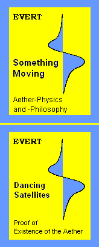

|
|
|
 |
Evert Something Moving
ISBN 978 - 3 - 8423 - 6312 - 0 Euro 45.00 Production and publisher: BoD - Books on Demand, Norderstedt, Germany, ©2011 Alfred Evert, hardcover, form 17*22 cm, 324 pages, 170 color pictures Content: Chapters 08.01.-08.21. of the Aether-Physics and -Philosophy, a comprehesive description for the Aether and base for new physics and world view.
Evert Dancing Satellites ISBN 978 - 3 - 7322 - 8518 - 1 Euro 8.00
pdf-files for download
ap01e.pdf
Teil 01. Introduction (24 pages)
ap09ae.pdf
Teil 09. Aether-Electro-Technics, chapters 01.-09. (69 pages) |
| Home | Main-Menue of Aether-Physics |